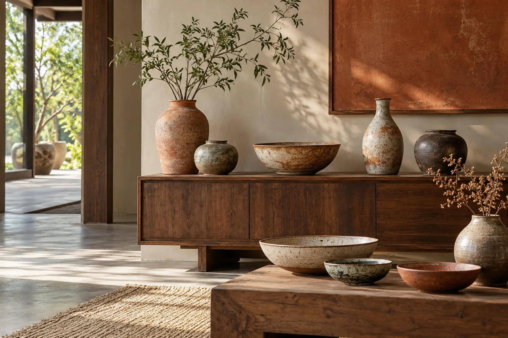
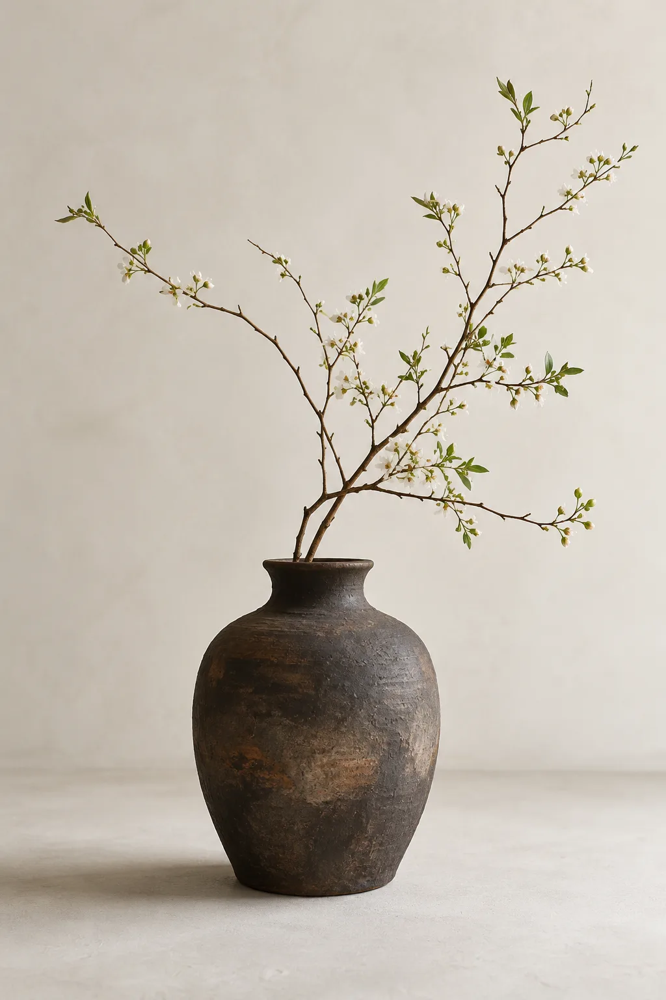
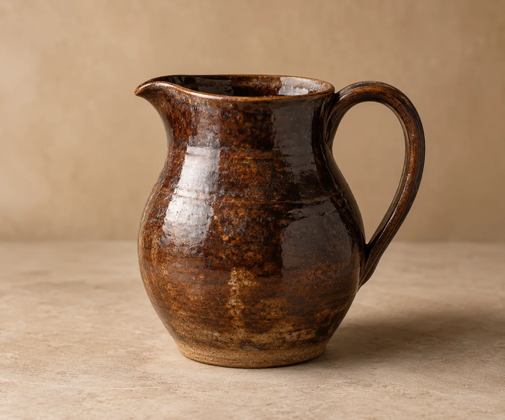
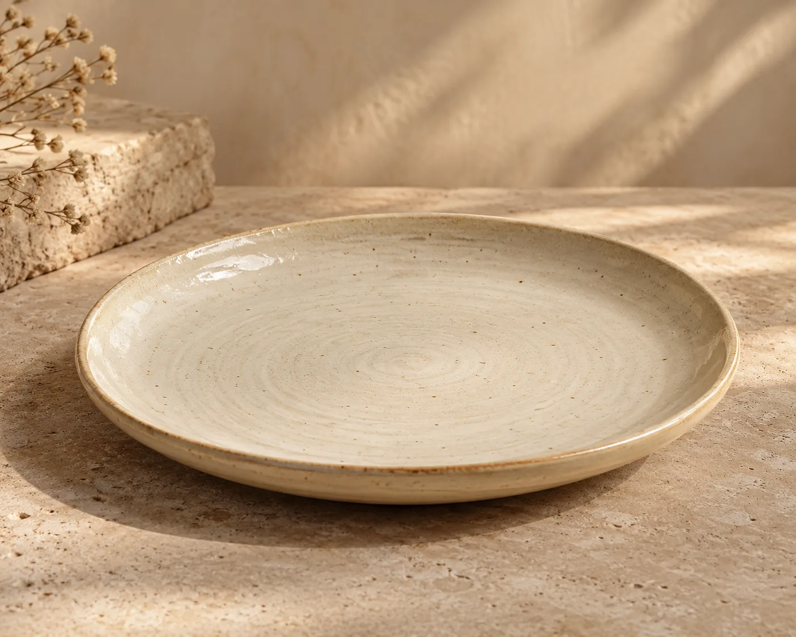
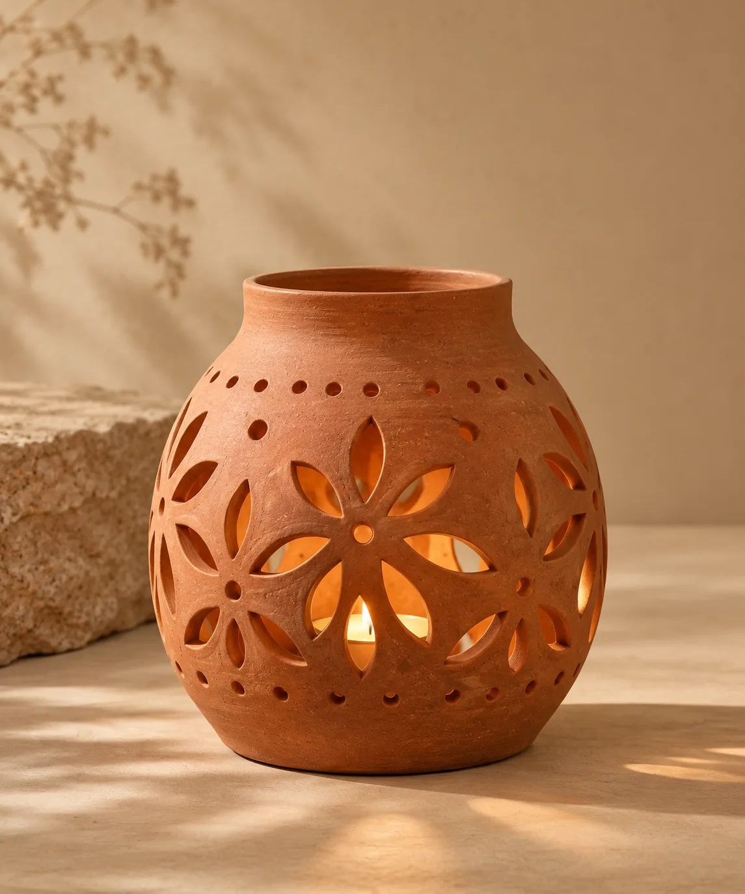

OUR STORY
A little beauty in the everyday
Inspired by Vietnamese craft, Đất Gốm imagines useful objects made to be held, used and loved every day.
Explore our story ↗


Inspired by Vietnamese craft, Đất Gốm imagines useful objects made to be held, used and loved every day.
Explore our story ↗
A quiet object inspired by the textures and warmth of Vietnamese clay.
View collection ↗Independent portfolio concept. Products are illustrative and not for sale.
Concept object
Concept object
Concept object
Concept object

Concept object

Concept object
Thoughtful form
Warm materials
Everyday use
Independent portfolio concept. Products are illustrative and not for sale.
A closer look at material, making and the beauty of everyday rituals.
An imagined note about form, touch and the marks of making.
STUDIO NOTE · CONCEPTAn imagined reflection on making time for everyday rituals.
STUDIO NOTE · CONCEPTAn imagined note on useful objects shared around a table.
Independent portfolio concept. Products are illustrative and not for sale.
Independent portfolio concept. Products are illustrative and not for sale.
Back to Roylle ↗This is a portfolio demo. No message or booking is sent.
Demo complete. Nothing was sent or saved.